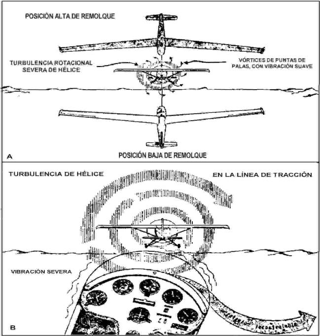
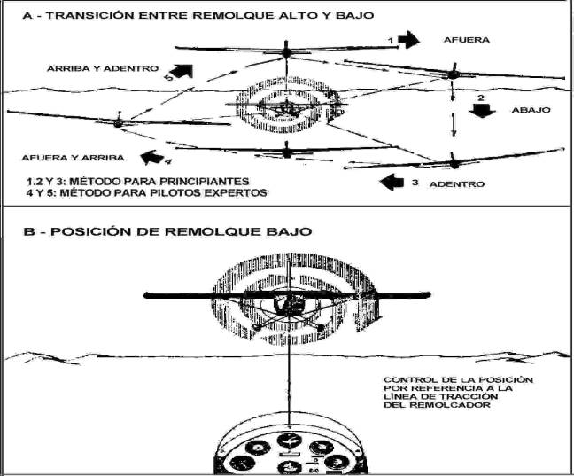

CURSO TEÓRICO
DE
PILOTO DE PLANEADOR
[ Arriba ] [ 1ª Sección ] [ 2ª Sección ] [ 3ª Sección ] [ 4ª Sección ] [ 5ª Sección ] [ 6ª Sección ] [ 7ª Sección ] [ 8ª Sección ] [ 9ª Sección ] [ 10ª Sección ] [ 11ª Sección ] [ 12ª Sección ] [ 13ª Sección ] [ 14ª Sección ] [ 15ª Sección ]
11ª Sección: CHORRO DE LA HÉLICE Y VÓRTICES MARGINALES, REMOLQUE ALTO Y BAJO
CHORRO DE LA HÉLICE Y VÓRTICES MARGINALES
Se denomina así a una región de severa turbulencia de un ancho
aproximado a 9 m (30 pies) para el primero y del equivalente a la envergadura del avión;
con torbellinos que rotan en sentido opuesto (hacia adentro) de cada una de sus puntas,
los últimos. Sus efectos durante el remolque alcanzan máxima intensidad hasta los 75 m
(250 pies) detrás del avión. 
Alrededor de la circunferencia de dicha perturbación
existe una zona relativamente tranquila pero de inconfundible turbulencia aun cuando se
entre en ella cuidadosamente. (Fig. Nº 5 A y B).
Figura
Nº 5 – Turbulencia de hélice
Sus
efectos deben evitarse, debiendo el planeador permanecer arriba, abajo, o a los costados
de la misma. De entrar en su zona de influencia tratará de permanecer en ésta el menor
tiempo posible.
La acción de los alerones dentro del área afectada es
generalmente inefectiva, aun cuando un planeador de gran envergadura puede estar con uno o
ambos de ellos fuera de la zona afectada por la turbulencia con menores problemas en el
control de la aeronave.
Inversamente una máquina con poca envergadura
experimentará las mayores dificultades.
Como se dijo se evitará permanecer en la zona turbulenta
aun a costa de disminuir la tensión en la soga.
Durante el curso se demostrarán al alumno sus efectos
para que:
1º) Reconozca los riesgos que ocasiona entrar en la zona
perturbada.
2º) Aprenda a corregir sus efectos y a volar razonablemente
cerca del área en cuestión, para obtener la posición de remolque más eficiente con el
mínimo de resistencia al avance.
REMOLQUE ALTO
Es el
empleado comúnmente. Proporciona mayor visibilidad para ambos pilotos y no tiene el
riesgo durante el desprendimiento que la soga golpee al planeador. Normalmente este
último vuela ligeramente sobre el avión, arriba del área de perturbación.
REMOLQUE BAJO
Esta posición -debajo de la zona de turbulencia-, es de gran
valor para desarrollar la confianza durante el entrenamiento. 
Proporciona una relación planeador-avión más estable
que la hace muy útil en vuelos de navegación remolcados. La mayor estabilidad es
también ventajosa en turbulencia suave. Sin embargo, si la línea de remolque tuviera que
desprenderse del avión o se rompiera muy cerca de éste, sus restos -especialmente el
extremo-, podrían dañar al planeador.
Respecto a la turbulencia si fuera suficientemente severa
como para poner a prueba la resistencia de la cuerda debido a los tirones, se adoptará la
posición de remolque alto, que para el caso es la mejor, aun cuando lo más aconsejable
es desistir del vuelo aterrizando en el aeródromo más cercano.
La entrada en remolque bajo se logra moviéndose por
afuera del chorro de la hélice y los vórtices marginales en un desplazamiento
rectangular y descendiendo hacia un lado. Este desplazamiento como lo muestra la figura 6
A será dentro de lo posible en el sentido de las agujas del reloj empleando
deslizamientos o spoilers.
Cuando el planeador llegue al nivel deseado -siempre por
debajo de la perturbación-, se retomará como muestra la figura 6 A la posición adecuada
detrás del remolcador.
Como medio de instrucción este cambio de ubicación puede
combinarse con la experiencia de permitir al alumno ser afectado por la turbulencia;
únicamente después que haya aprendido la correcta posición de remolque bajo como se ve
en la figura Nº 6 B. Si entonces decide que para recuperar el control le será más
conveniente adoptar esta ubicación que la de remolque alto, tratará de lograrla sin
descender excesivamente debajo del nivel de vuelo del avión. Excederse en este sentido
ocasionará un tirón hacia abajo en su cola obligándolo a adoptar una actitud de
pérdida de sustentación.
Figura Nº 6
– Remolque bajo
Volver Arriba